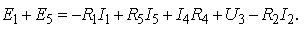

в любом контуре электрической цепи алгебраическая сумма ЭДС равна алгебраической сумме падений напряжения вдоль этого контура, т. е. (соответственно для цепей постоянного и переменного тока)
 ;
;  ,
,
где ( n ) - количество ИН в контуре; ( m
), ( p ), ( q ) - количество резистивных,
индуктивных и ёмкостных элементов в контуре соответственно.

